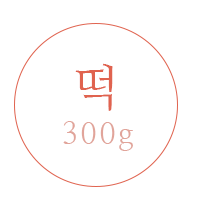
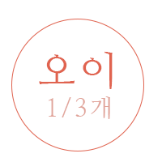
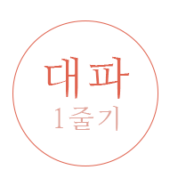
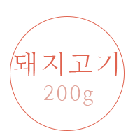
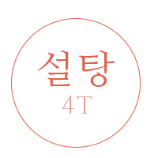
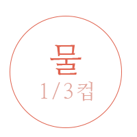
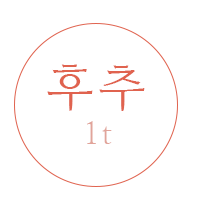
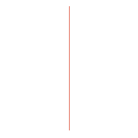

|   | ||
|    | ||
|  |
||
1단계,떡을 물에 불려 준비하고 건표고도 물에 불려 준비합니다. 2단계,오이는 돌려깎기 하여 채썰고, 당근,양파는 크게 썰어주고 3단계,돼지고기는 먹기 좋게 썰어서 소금, 후추로 밑간을 해줍니다. 4단계,떡을 눌러 보고 부드러워지면 당근, 오이, 양파 등의 야채와 불려놓은 표고버섯을 넣고 볶아줍니다. 5단계,마지막으로 참기름 약간과 후추를 넣어서 플레이팅 한 후, 출처: 만 개의 레시피, 챔창, http://www.10000recipe.com/recipe/6838538 |
||